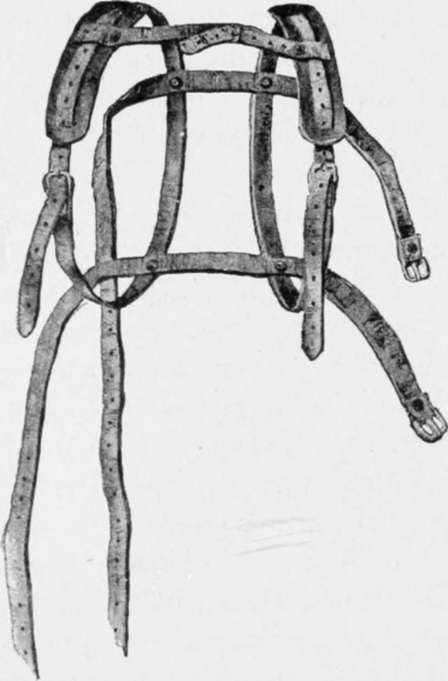

Practical Points On Camping Out. Part 6
Description
This section is from the book "American Game Fishes", by W. A. Perry. Also available from Amazon: American Game Fishes: Their Habits, Habitat, and Peculiarities; How, When, and Where to Angle for Them.
Practical Points On Camping Out. Part 6
Another handy item in a camp-outfit is a pack-strap. This is a kind of human harness, made to fit over the shoulders, and with straps attached, for buckling up the roll of bedding, clothing, or whatever else is to be carried. The accompanying diagram will enable any shoemaker or harnessmaker to make one. This strap is often useful in carrying a light outfit into the woods or mountains, or for carrying game out of sections of country where a horse cannot travel. Each man should carry, when tramping or riding in the country, a rubber drinking cup. He should also advise his companions to do likewise. This thing of all having to drink out of one cup is not always pleasant, and often entails unnecessary delay when crossing a stream.
A generous supply of rope should be provided in every camping outfit. It will frequently come in demand for various purposes. Not less than fifty feet each-of quarter-inch and half-inch-should be provided, in addition to the picket ropes, tent ropes, etc.
Each man should carry a field-glass. It is one of the greatest luxuries imaginable for a trip on the mountains or plains, and will often come into play in wooded countries. By its aid rocks are often turned into living animals, and vice versa. Elks or bears are often found to be only cattle or horses; and domestic sheep sometimes turn out to be antelopes. A clear pool of water is often transformed into a dry bed of alkali, and a white rock sometimes proves to be a wild goat. The glass is useful in hunting lost horses and in looking out favorable camping grounds. It saves an immense amount of riding and walking, and pays for itself once a week regularly. While you are buying a glass get a good one. It will cost twenty to thirty dollars, but will prove a good investment.
A good compass is another important item. It should cost two to three dollars, and should be set in a nickel or silver hunting case.
No man should ever go into the woods or mountains or on the plains without a water-proof match-box. And yet, strange as it seems, there is no such thing in the market. There are several which purport to be waterproof but are not thoroughly so. You can get a surgical-instrument-maker to make one out of a piece of brass tubing, say three-quarters of an inch in diameter and about two and-a-half inches long.
A convenient and serviceable camp-kettle is made of heavy galvanized iron, and if intended for three or four men should be ten inches in diameter and sixteen inches deep. It should have a {-inch wire around the top, a bail of the same size, and heavy malleable iron ears. If built on these specifications it may be packed on a horse, and if properly placed in the pack the lustiest packer in the mountains may cinch it until he turns black in the face, and cannot hurt it.
Two tin pails, made of heavy block-tin, should be made to nest in this kettle. They should be nine inches in diameter and eight inches deep. They should have flat covers, that fit tightly, with small movable iron rings at the sides, below the cover. Then when you desire to cook dried fruits, rice, oatmeal, farina, beans, and other food that is liable to scorch when cooking, in an ordinary camp-kettle, you can place it in one of these pails, put in with a sufficient quantity of water, fit the lid on, fill your camp-kettle half full of water, drop three or four pebbles in the kettle, set your tin-pail in on them, put a rock on top of it to hold it down, then put your camp-kettle on the hottest fire you can make, and let it hump itself until dinner is ready. Now take out your tin pail, take the cover off, and your rice, fruit or whatever it may be, will show up as clean and as deliciously cooked as your mother, wife or sister could cook it at home. If you cook more than you need for one meal, and are to move camp before the next, fit the cover on the pail, set it in the camp-kettle, and the cooked rations will ride to your next home as well as though they had not been cooked.
You will need one or more large frying pans with flat wrought iron handles. When cooking on a big fire you can cut a stick two or three feet long, split the end of it, slip the end of the iron handle into the split, wrap the stick with a cord, and then stand so far back from the fire that your meat will fry before your face does.
You should also carry a good-sized wire broiler, made double so that the meat can be laid on one part and the other will fold down on it. The two handles fasten together with a running ring. The handle may be spliced out with a split stick the same as the frying pan. A half-inch board should be cut, of a size slightly larger than the broiler, to fold in it when packing, and to keep it from being crushed in the pack.
If traveling with teams and without a stove, a "Dutch oven" will be found useful for baking bread, meats and vegetables. But if you travel with pack animals, canoes or mackinaws, it will be found cumbersome; and in all such cases it is better to depend entirely upon the frying pan for baking, and on this, the camp-kettle and broiler for cooking meats and vegetables.
The coffee-pot and tea-pot should be made of heavy block-tin, with pressed lid. The handle should be riveted on and the bail attached by heavy malleable iron ears.
Plates and cups should also be of block-tin; the latter should be pressed, should have the handles wired on at the top and loose at the bottom, so that any number of them will nest. Knives and forks should be of steel-not cast iron, and the former should be kept sharp enough to cut meat without generating profanity.
The ax should be a full-sized one weighing about three pounds; should have a full-length handle; and should be carefully muzzled so that it will not cut up any other articles in the pack or in the wagon. A good muzzle is made of sole-leather, fastened with copper rivets, and should have straps to pass around the pole and over the handle and then buckle.
Continue to:
- prev: Practical Points On Camping Out. Part 5
- Table of Contents
- next: Practical Points On Camping Out. Part 7